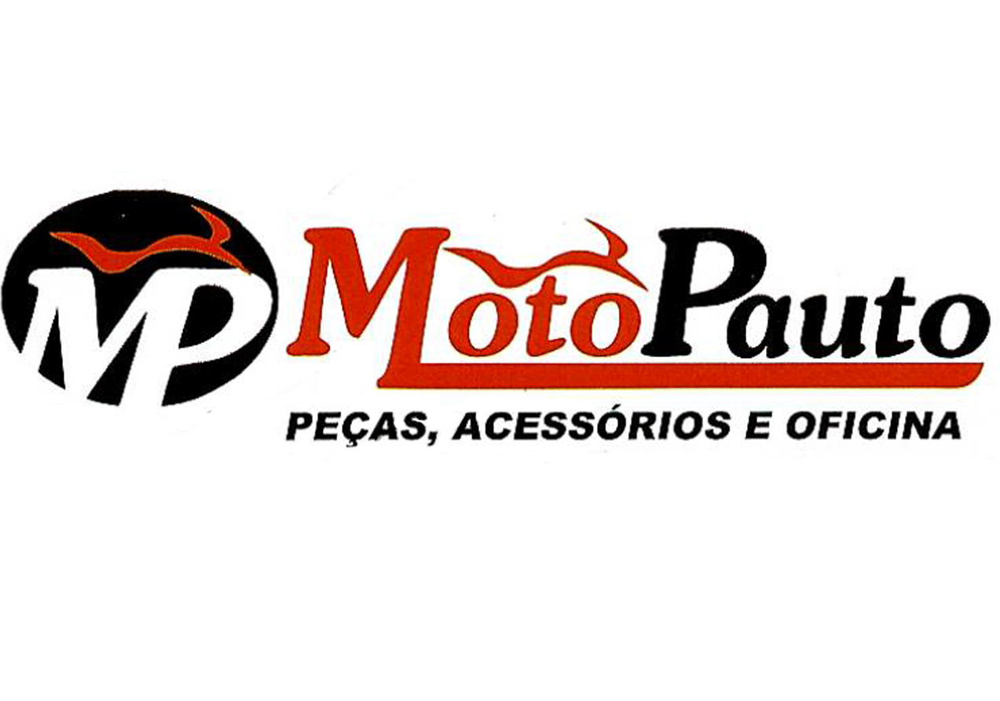

Apoiadores

Fase 2 (TESTES)
Projeto Agro Detector
Projeto
Componetes
Ideia
Materiais
Experiência
Agradecimentos
Fotos
Professor
0
Frascos Tóxicos Coletados
0
Lixo Doméstico a Ser Coletado
Baixar Relatório PDF